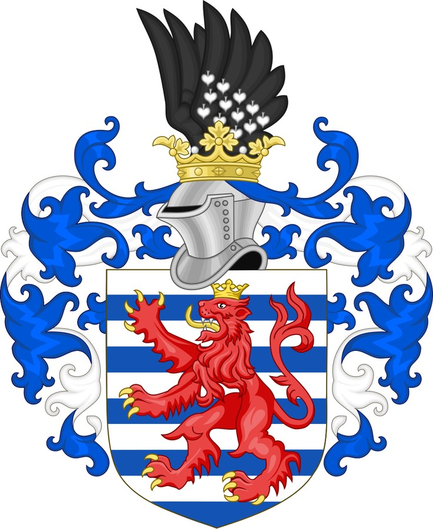

House of Luxembourg¶
House card¶
Seat |
Buda (Hungary), Prague (Bohemia) and the imperial court. [Historical record] |
Arms / sigil |
The Luxembourg lion; Sigismund’s arms combine Hungary, Bohemia and the imperial eagle. He founded the Order of the Dragon in 1408. [Historical record] |
Words |
Divide et arbitra. „Divide, then arbitrate.“ [The saga’s invention] |
Patron / burden |
The Shadow-Seller serves him in 1429–30; the Gold-Glutton flatters him. [The saga’s invention] |
House of Luxembourg

House of Luxembourg · house — Image: Wereszczyński, CC BY-SA 4.0 via Wikimedia Commons¶

Tipas |
giminė |
Status |
Istoriniai duomenys |
Pastaba |
Sigismund (1368–1437): King of Hungary, of the Romans, of Bohemia, Emperor; offered Vytautas a crown at Lutsk, 1429. |
Lineage¶
Sigismund (1368–1437), son of Emperor Charles IV: King of Hungary 1387, King of the Romans 1411, of Bohemia 1419/1436, Emperor 1433. Married Mary of Hungary (1385), then Barbara of Celje (1405/08), a cousin of Jogaila’s second queen Anna of Celje. [Historical record]
Feuds & alliances¶
Arbiter between Poland and the Order (the Breslau award of 1420 went against Poland); host of the Council of Constance; ally of the Order in 1409–10; opponent of the Polish–Lithuanian union, which a Lithuanian crown could split.
Fate across the books¶
III: a reigning king of forty-one, not a „younger“ figure, who takes the Order’s money before Grunwald.
IV: at the Congress of Lutsk (Jan 1429) he offers Vytautas a crown, then sends it by couriers who are robbed on the Polish border in August 1430. In the saga, Henė is his jester and the crown turns to leaves.
V: dead by 1437; his daughter’s marriage to Albert II of Habsburg carries his claims to the Habsburgs. [Historical record]
Ryšiai
Ally: Kęstutaičiai (Kęstutis’s line) (1429–1430) — The Lutsk crown offer.
Members: Sigismund of Luxembourg
Sąsajos¶
graph LR
kestutaiciai["Kęstutaičiai (Kęstutis's line)"]
luxembourg["House of Luxembourg"]
sigismund["Sigismund of Luxembourg"]
luxembourg -->|Ally| kestutaiciai
sigismund -->|Member of| luxembourg
style luxembourg stroke-width:3px